Cátedra 22: Máquinas Térmicas y la Idea de Carnot
Se presenta a Sadi Carnot y su interés en las máquinas de vapor, se desarrolla la estructura abstracta de toda máquina térmica (entra calor a alta $T$, sale trabajo y calor de desecho a baja $T$), se demuestra que ninguna máquina puede operar con un solo flujo de calor, y se introduce la idea genial de Carnot: una máquina reversible que funciona igual en ambas direcciones (motor o refrigerador).
Temas que cubre
- Contexto histórico: Sadi Carnot y su interés en entender las máquinas de vapor (caldera, sistema de refrigeración, biela/motor)
- Estructura abstracta de toda máquina térmica: entra $Q_{in}$ a temperatura alta, se genera trabajo $W$, sale $Q_0$ a temperatura baja
- Por qué ninguna máquina puede tener un solo flujo de calor (violaría la idea intuitiva de que no se puede crear movimiento perpetuo solo subiendo y bajando algo)
- La gran idea de Carnot: imaginar una máquina reversible, construida combinando procesos isotérmicos y adiabáticos
- El ciclo reversible en el plano $P$-$V$: dos isotermas y dos adiabáticas, recorridas en una dirección (motor) o en la inversa (refrigerador)
- Refrigerador = máquina de Carnot operando en reversa: requiere trabajo externo para sacar calor de un foco frío y entregarlo a uno caliente
- El enunciado de Clausius: el calor nunca fluye espontáneamente de un cuerpo frío a uno caliente sin trabajo externo
Conceptos clave
La máquina abstracta
Carnot redujo cualquier máquina térmica a su esqueleto lógico: un flujo de calor $Q_{in}$ que ingresa desde un foco a temperatura alta, una porción que se convierte en trabajo útil $W$, y un calor de desecho $Q_0$ que sale hacia un foco a temperatura baja. Esta abstracción —sin importar si es vapor, un motor de combustión, o una célula haciendo fotosíntesis— permite comparar la eficiencia de cualquier proceso real con el límite ideal.
Imposibilidad de un solo flujo de calor
Intuitivamente, no se puede construir una máquina que tome calor de un solo foco y lo convierta enteramente en trabajo en un ciclo (esto sería análogo a una rueda hidráulica que sube y baja agua eternamente sin pérdida). Cualquier máquina cíclica necesita al menos dos focos de temperatura distinta: uno que entrega calor y otro que recibe el desecho. Esta es la semilla del enunciado de Kelvin de la segunda ley.
Reversibilidad: motor ↔ refrigerador
La idea genial de Carnot es que un proceso construido enteramente con pasos reversibles (isotermas + adiabáticas) puede recorrerse en cualquier dirección. Recorrido en un sentido, consume $Q_{in}$ y produce trabajo (motor). Recorrido en sentido contrario, consume trabajo externo y bombea calor de un foco frío a uno caliente (refrigerador). Es la misma máquina física operando al revés — ningún otro tipo de máquina tiene esta simetría exacta.
Enunciado de Clausius
El calor nunca fluye espontáneamente desde un cuerpo más frío hacia uno más caliente sin que se realice trabajo externo sobre el sistema. Es exactamente lo que permite que un refrigerador funcione: requiere trabajo (el motor del refrigerador) para forzar ese flujo "antinatural". Carnot y Clausius llegarán a la conclusión de que esta máquina ideal conserva, además de la energía, una cantidad nueva: $Q/T$, la entropía.
Fórmulas fundamentales


Qué hay que entender
- Carnot no diseñó una máquina mejor — descubrió la estructura lógica que toda máquina térmica, sin excepción, debe respetar. Esto le permitió razonar sobre límites de eficiencia sin necesitar saber nada de mecánica estadística (que ni existía en su época).
- La clave de la reversibilidad no es solo "es elegante" — es lo que permite que la misma máquina sirva de motor o de refrigerador. Una máquina real (irreversible) no tiene esta propiedad: invertirla no simplemente revierte los flujos de calor y trabajo en igual magnitud.
- El enunciado de Clausius parece "obvio" (el calor no fluye espontáneamente del frío al caliente) pero es exactamente equivalente a la imposibilidad de la máquina de eficiencia 1 (Kelvin). Ambos enunciados son consecuencias del mismo hecho profundo: existe una cantidad, la entropía, que no puede destruirse netamente.
- Anticipo importante: la máquina de Carnot, al ser reversible, no solo conserva energía (como cualquier máquina) sino que también "conserva" $Q/T$ en cada foco — esto es la pista de que $Q/T$ se comporta como una cantidad con propiedades especiales, que se formalizará como entropía en la próxima clase.
- No confundir "la máquina de Carnot es la mejor posible" con "es alcanzable en la práctica". Es un límite ideal: cualquier máquina real, con sus pérdidas y procesos no perfectamente lentos, tendrá necesariamente $\eta_{real} < \eta_{Carnot}$ para los mismos focos de temperatura.